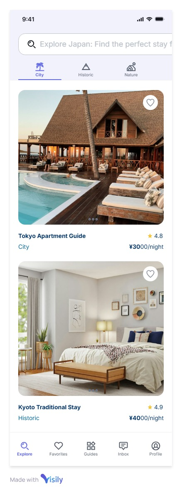
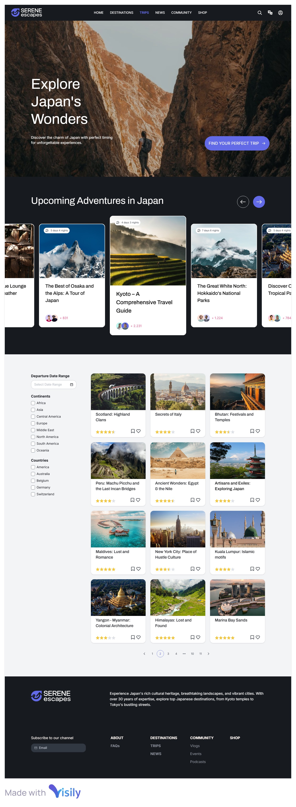

Dream Trip to Japan
This name reflects the site's purpose: helping users envision, explore, and prepare for their ideal travel experience in Japan. It’s simple, aspirational, and clear about the topic.
Optional domain availability: dreamjapantrip.com or myjapanplan.net
The website will serve as a personal travel planning hub focused on Japan. It will feature destination recommendations, cultural highlights, budget planning tools, and dynamic content fetched from APIs or JSON files. The site is designed to be informative, interactive, and responsive for users interested in traveling to Japan.
The website will use a warm and culturally-inspired palette:
Mobile View (Home Page):
Desktop View (Home Page):
